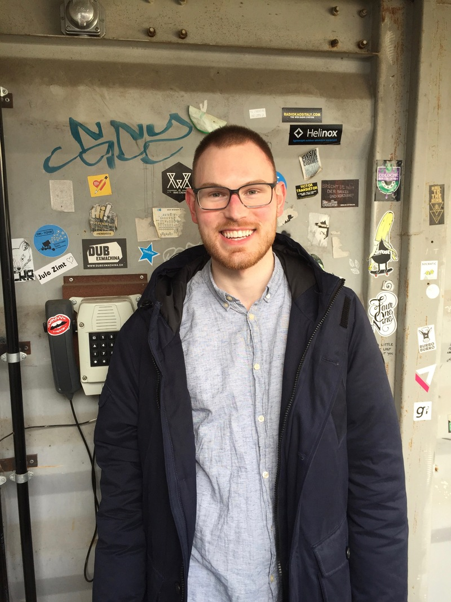
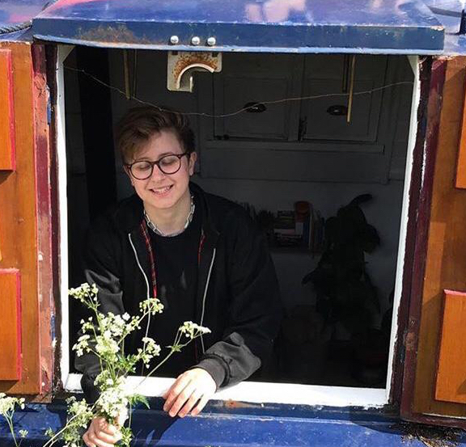
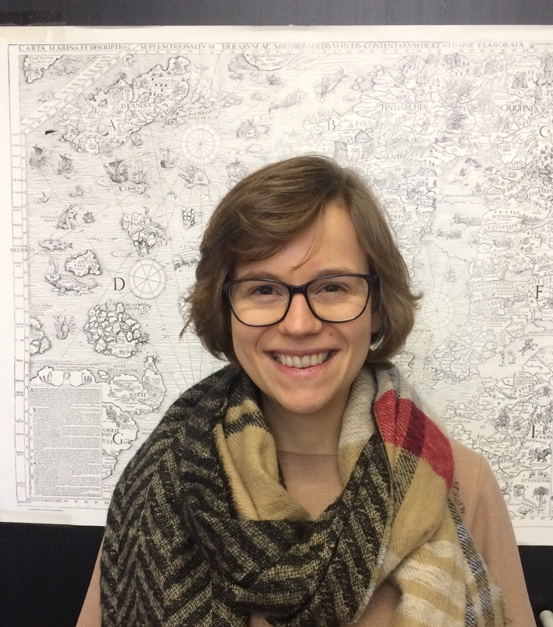
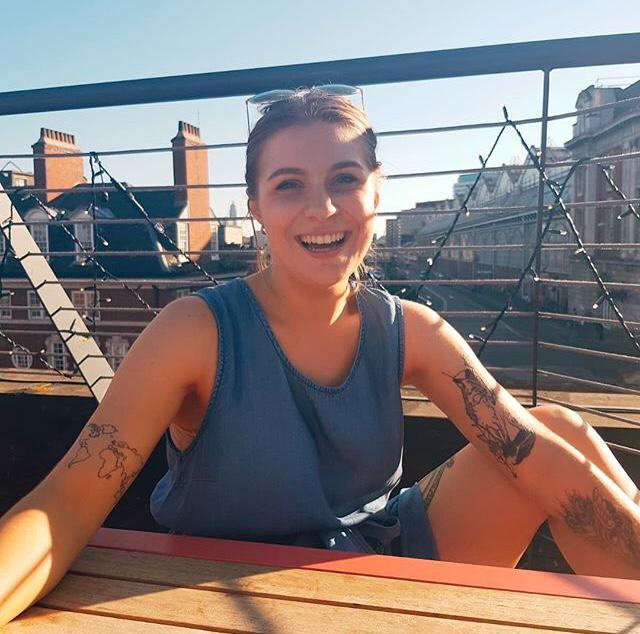
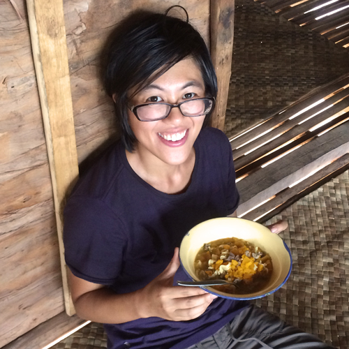

Quentin
Atkinson
is Professor in Psychology at the University of Auckland and
co-director of the Language, Culture and Cognition Lab. His
research uses computational modeling tools to study the evolution of
language and culture. He is co-leader of Glottobank.
Quentin
Atkinson
is Professor in Psychology at the University of Auckland and
co-director of the Language, Culture and Cognition Lab. His
research uses computational modeling tools to study the evolution of
language and culture. He is co-leader of Glottobank.
 Russell Gray
Ph.D. (Univ. Auckland), FRSNZ, is the Director of the Department of
Linguistic and Cultural Evolution at the Max Planck Institute for the
Science of Human
History. He is sponsor and co-leader of Glottobank.
Russell Gray
Ph.D. (Univ. Auckland), FRSNZ, is the Director of the Department of
Linguistic and Cultural Evolution at the Max Planck Institute for the
Science of Human
History. He is sponsor and co-leader of Glottobank.
 Wolfgang Barth works on data discovery and formation. He finds and
sorts kinship systems
and numeric systems for Parabank.
Wolfgang Barth works on data discovery and formation. He finds and
sorts kinship systems
and numeric systems for Parabank.
 Damián Blasi is a postdoc at the University of Zürich and an
external member of the
MPI SHH where he uses large-scale typological databases to make inferences
on the
relevance of non-linguistic factors on linguistic structures, and provides
general
statistical assistance for Glottobank.
Damián Blasi is a postdoc at the University of Zürich and an
external member of the
MPI SHH where he uses large-scale typological databases to make inferences
on the
relevance of non-linguistic factors on linguistic structures, and provides
general
statistical assistance for Glottobank.
Remco Bouckaert is a research
fellow affiliated
with the University of Auckland, and developing new methods to infer deep
language
relationships using the Glottobank data.
 Claire Bowern (PhD, Harvard,
2004) is Associate Professor of Linguistics at Yale University. She is a
specialist in historical linguistics and language documentation, with
particular reference to the languages of Australia - Yale
Pama-Nyungan Lab. She does fieldwork in northern Australia on
Yolŋu and Nyulnyulan languages and her reference grammar of Bardi appeared
in 2012. Her current research involves the possible differences between
languages spoken by hunter-gatherer groups and the better-studied
languages of agriculturalists. She has led an interdisciplinary initiative
funded by the National Science Foundation’s Human Social Dynamics program
to investigate hunter-gatherer language change, including differences in
loan rates, material culture nomenclature, and ethnobiology.
Claire Bowern (PhD, Harvard,
2004) is Associate Professor of Linguistics at Yale University. She is a
specialist in historical linguistics and language documentation, with
particular reference to the languages of Australia - Yale
Pama-Nyungan Lab. She does fieldwork in northern Australia on
Yolŋu and Nyulnyulan languages and her reference grammar of Bardi appeared
in 2012. Her current research involves the possible differences between
languages spoken by hunter-gatherer groups and the better-studied
languages of agriculturalists. She has led an interdisciplinary initiative
funded by the National Science Foundation’s Human Social Dynamics program
to investigate hunter-gatherer language change, including differences in
loan rates, material culture nomenclature, and ethnobiology.
Thiago Chacon is a professor at the University of Brasilia, who
works with languages
from the Northwest Amazon. He is involved with historical, typological and
descriptive
linguistic research, as well as interdisciplinary projects aimed at
explaining
linguistic diversity from a broad historical perspective. Within
Glottobank, Thiago is
involved in Parabank, Lexibank and Phonobank.
 Jeremy Collins is a PhD student at Radboud University, Nijmegen and
the Max Planck Institute for Psycholinguistics, researching language structures and what
their
distributions can show about prehistoric relatedness and contact between
languages. He is a Grambank designer and feature patron.
Jeremy Collins is a PhD student at Radboud University, Nijmegen and
the Max Planck Institute for Psycholinguistics, researching language structures and what
their
distributions can show about prehistoric relatedness and contact between
languages. He is a Grambank designer and feature patron.
 Luise Dorenbusch studied linguistics in Leipzig and Nijmegen and
has worked at the MPI for Evolutionary Anthropology and the MPI for
Psycholinguistics. Currently based in Leipzig, she codes language data for
Grambank with a focus on the non-Pama-Nyungan languages of Australia.
Luise Dorenbusch studied linguistics in Leipzig and Nijmegen and
has worked at the MPI for Evolutionary Anthropology and the MPI for
Psycholinguistics. Currently based in Leipzig, she codes language data for
Grambank with a focus on the non-Pama-Nyungan languages of Australia.
 Michael Dunn studies the evolution of language structure and the
history of language families. His work combines traditional linguistic
methods with computational (phylogenetic) approaches from the biological
and ecological sciences. Michael is Professor of General Linguistics at
Uppsala University in Sweden.
Michael Dunn studies the evolution of language structure and the
history of language families. His work combines traditional linguistic
methods with computational (phylogenetic) approaches from the biological
and ecological sciences. Michael is Professor of General Linguistics at
Uppsala University in Sweden.
 Nick Evans is a typologist and anthropological linguist
specialising in Australian and
Papuan languages. He is an ARC Laureate Professor at the Australian
National University
and director of the
ARC Research Centre for the Dynamics of
Language (CoEDL).
Within Glottobank he is a member of the Parabank Collective and an
Associated
Collaborator in Grambank.
Nick Evans is a typologist and anthropological linguist
specialising in Australian and
Papuan languages. He is an ARC Laureate Professor at the Australian
National University
and director of the
ARC Research Centre for the Dynamics of
Language (CoEDL).
Within Glottobank he is a member of the Parabank Collective and an
Associated
Collaborator in Grambank.
 Robert Forkel is responsible for strategies and infrastructure for
data curation and
presentation within the consortium, bringing in the experiences gathered
in the
CLLD project.
Robert Forkel is responsible for strategies and infrastructure for
data curation and
presentation within the consortium, bringing in the experiences gathered
in the
CLLD project.
 Simon Greenhill studies how languages evolve using computational
methods and large-scale cross-linguistic databases. He is currently a
research fellow in the ARC Research Centre for the Dynamics of Language
(CoEDL), and at the Max Planck Institute for the Science of Human History.
His role in this project is design and analysis of Lexibank and Parabank.
Simon Greenhill studies how languages evolve using computational
methods and large-scale cross-linguistic databases. He is currently a
research fellow in the ARC Research Centre for the Dynamics of Language
(CoEDL), and at the Max Planck Institute for the Science of Human History.
His role in this project is design and analysis of Lexibank and Parabank.
 Harald Hammarström has a background in linguistics and computer
science. He is working
in the Grambank project in the design, planning and management as well as
website
programming and occasional coding.
Harald Hammarström has a background in linguistics and computer
science. He is working
in the Grambank project in the design, planning and management as well as
website
programming and occasional coding.
 Martin Haspelmath is a
senior scientist at MPI-SHH Jena and a professor at Leipzig
University. He was one of the creators of the
World Atlas of
Language Structures (2005)
and was heavily involved in feature design in the
Atlas of
Pidgin and Creole Language Structures (2013).
He is a senior advisor in the Grambank project.
Martin Haspelmath is a
senior scientist at MPI-SHH Jena and a professor at Leipzig
University. He was one of the creators of the
World Atlas of
Language Structures (2005)
and was heavily involved in feature design in the
Atlas of
Pidgin and Creole Language Structures (2013).
He is a senior advisor in the Grambank project.
 Hannah Haynie is a postdoctoral associate at Colorado State
University, conducting
research on the evolution and geography of language and culture. As a
historical
linguist, she has worked primarily on languages of North America and
Australia, and
holds a Ph.D. in linguistics from the University of California Berkeley.
Hannah is a
Grambank designer and feature patron.
Hannah Haynie is a postdoctoral associate at Colorado State
University, conducting
research on the evolution and geography of language and culture. As a
historical
linguist, she has worked primarily on languages of North America and
Australia, and
holds a Ph.D. in linguistics from the University of California Berkeley.
Hannah is a
Grambank designer and feature patron.
 Paul Heggarty is a senior
scientist at
MPI-SHH Jena. Within Glottobank, he contributes
linguistic, archaeological and genetic perspectives to Bayesian
phylogenetic analyses of
Indo-European origins. He runs the CoBL database project on Cognacy
in Basic Lexicon,
starting with a database for the Indo-European family, a successor to IELex by
Michael
Dunn. He also runs the Sound Comparisons database project for
exploring diversity in
phonetics across language families from around the world.
Paul Heggarty is a senior
scientist at
MPI-SHH Jena. Within Glottobank, he contributes
linguistic, archaeological and genetic perspectives to Bayesian
phylogenetic analyses of
Indo-European origins. He runs the CoBL database project on Cognacy
in Basic Lexicon,
starting with a database for the Indo-European family, a successor to IELex by
Michael
Dunn. He also runs the Sound Comparisons database project for
exploring diversity in
phonetics across language families from around the world.
Roberto Herrera is a research assistant working on the Grambank and
Parabank projects
since June 2015. He is based in Leipzig and works mostly on languages of
the so-called
Intermediate Area in the Americas.
Jessica Katiuscia Ivani is a PhD student at the University of
Pavia, conducting
typological research on the morphosyntax of grammatical features, with a
focus on
nominal number and gender. Within Glottobank, she is involved in the
Parabank project.
 Olga Krasnoukhova is a member of the Grambank project and is
responsible for coding data on South American languages.
Her research interests lie in linguistic typology and areal linguistics
focusing on South American languages. Her doctoral thesis (2012)
investigated syntactic and morphosyntactic characteristics of the Noun
Phrase components. Olga is also one of the designers of the SAILS database
(http://sails.clld.org/).
Olga Krasnoukhova is a member of the Grambank project and is
responsible for coding data on South American languages.
Her research interests lie in linguistic typology and areal linguistics
focusing on South American languages. Her doctoral thesis (2012)
investigated syntactic and morphosyntactic characteristics of the Noun
Phrase components. Olga is also one of the designers of the SAILS database
(http://sails.clld.org/).
 Jakob Lesage is a PhD student at INALCO in Paris and is part of the
Adagram (http://llacan.vjf.cnrs.fr/AdaGram/#nogo) project based at the
research unit "Langage, Langues et Cultures d'Afrique Noir" (LLACAN),
where he is working on a (coder-friendly) grammar of Kam, an Adamawa
language of northeastern Nigeria. He is a Grambank feature patron and
occasional coder.
Jakob Lesage is a PhD student at INALCO in Paris and is part of the
Adagram (http://llacan.vjf.cnrs.fr/AdaGram/#nogo) project based at the
research unit "Langage, Langues et Cultures d'Afrique Noir" (LLACAN),
where he is working on a (coder-friendly) grammar of Kam, an Adamawa
language of northeastern Nigeria. He is a Grambank feature patron and
occasional coder.
 Stephen Levinson is Director of the Max Planck Institute for
Psycholinguistics. His work
focusses on language diversity and its implications for theories of human
cognition. He is
a designer and senior advisor on the Grambank project.
Stephen Levinson is Director of the Max Planck Institute for
Psycholinguistics. His work
focusses on language diversity and its implications for theories of human
cognition. He is
a designer and senior advisor on the Grambank project.
 Johann-Mattis List is a post-doctoral
research fellow currently pursuing an
interdisciplinary research project on Chinese dialect history in Paris. In
his research, he generally follows a data-driven, empirical, and
quantitative perspective on language change and language history, with a
focus on computer-assisted approaches that mediate between classical and
computational approaches. He is theoretically and practically involved in
the LexiBank and PhonoBank projects.
Johann-Mattis List is a post-doctoral
research fellow currently pursuing an
interdisciplinary research project on Chinese dialect history in Paris. In
his research, he generally follows a data-driven, empirical, and
quantitative perspective on language change and language history, with a
focus on computer-assisted approaches that mediate between classical and
computational approaches. He is theoretically and practically involved in
the LexiBank and PhonoBank projects.
 Luke Maurits is a
postdoctoral scholar
at the University of Auckland, with a background in mathematics and
cognitive science.
He works on Bayesian modelling of linguistic and cultural change, and is
the principle
developer of the BEASTling software package, which aims to make
computational historical
linguistics more accessible, automatable and replicatable.
Luke Maurits is a
postdoctoral scholar
at the University of Auckland, with a background in mathematics and
cognitive science.
He works on Bayesian modelling of linguistic and cultural change, and is
the principle
developer of the BEASTling software package, which aims to make
computational historical
linguistics more accessible, automatable and replicatable.
 Nataliia Hübler (formerly Natalia Neshcheret) studied Language and Variation and German linguistics at CAU Kiel, where she started coding languages. Now she is a PhD student within Eurasia3angle project at the MPI SHH in Jena. She is exploring the history of Transeurasian languages on the basis of their structural features by applying phylogenetic methods.
Nataliia Hübler (formerly Natalia Neshcheret) studied Language and Variation and German linguistics at CAU Kiel, where she started coding languages. Now she is a PhD student within Eurasia3angle project at the MPI SHH in Jena. She is exploring the history of Transeurasian languages on the basis of their structural features by applying phylogenetic methods.
Johanna Nickel is a master's student at CAU Kiel, where she studies
Language & Variation and Scandinavian studies. Her role at Grambank is to
code languages.

Sören Pieper is a Grambank coder from Kiel. He is in the final
stages of his MA in Language and Variation and Political Science at the
University of Kiel. He is currently writing his MA thesis in typology
concerning the cross-linguistic diversity of antipassives.
 Kyla Quinn is a PhD student in the Centre of Excellence for the
Dynamics of Language at the Australian National University in Canberra.
She is researching whether syncretism can be used as a tool for diagnosing
phylogeny and contact relationships between languages. Kyla is also
interested in morphology and paradigms, their description and
visualisation. Kyla is one of the designers of Parabank.
Kyla Quinn is a PhD student in the Centre of Excellence for the
Dynamics of Language at the Australian National University in Canberra.
She is researching whether syncretism can be used as a tool for diagnosing
phylogeny and contact relationships between languages. Kyla is also
interested in morphology and paradigms, their description and
visualisation. Kyla is one of the designers of Parabank.
Linda Raabe is a bachelor student at CAU Kiel, where she studies
empirical linguistics. Her role in Grambank is to code languages.
 Martine Robbeets is a research group leader at MPI-SHH Jena. With
her team, she plans to contribute data on the Transeurasian languages to
Grambank, Parabank and Lexibank. Project website here.
Martine Robbeets is a research group leader at MPI-SHH Jena. With
her team, she plans to contribute data on the Transeurasian languages to
Grambank, Parabank and Lexibank. Project website here.
 Hedvig Skirgård is a PhD student in linguistics at ANU and one of
the designers and
patrons in Grambank. She was previously employed as a coder within the
Nijmegen
Typological Survey which is the precursor to Grambank
. Her role in Grambank is to help manage and coordinate coding of
languages and the design of the questionnaire. She is the patron for 48
Grambank
features, including features concerning negation and tense & aspect. Her
PhD project is
on factors influencing the diversification of languages, what is it that
makes Samoa so
different from Vanuatu?
The PhD project
is a part of the
Wellsprings of Linguistic Diversity.
Hedvig Skirgård is a PhD student in linguistics at ANU and one of
the designers and
patrons in Grambank. She was previously employed as a coder within the
Nijmegen
Typological Survey which is the precursor to Grambank
. Her role in Grambank is to help manage and coordinate coding of
languages and the design of the questionnaire. She is the patron for 48
Grambank
features, including features concerning negation and tense & aspect. Her
PhD project is
on factors influencing the diversification of languages, what is it that
makes Samoa so
different from Vanuatu?
The PhD project
is a part of the
Wellsprings of Linguistic Diversity.
 Jana Winkler is a master's student of Language & Variation and
English Language, Literature & Lingustics at CAU Kiel. She has an interest
in creoles. Her role in Grambank is to code languages.
Jana Winkler is a master's student of Language & Variation and
English Language, Literature & Lingustics at CAU Kiel. She has an interest
in creoles. Her role in Grambank is to code languages.
 Alena Witzlack-Makarevich is an assistant professor at the
University of Kiel. Her role in GramBank is to supervise the coders at the
University of Kiel. She is also a patron of twenty feature related to
grammatical relations and alignment.
Alena Witzlack-Makarevich is an assistant professor at the
University of Kiel. Her role in GramBank is to supervise the coders at the
University of Kiel. She is also a patron of twenty feature related to
grammatical relations and alignment.
Giulia Barbos is a Grambank language coder based in London. She is part of the SOAS team and she holds a degree in Linguistics and International Relations. She has an interest for the area of intersection of language/discourse and the political sphere. In particular, she is passionate about language change and variation in political discourse, including transformations at the lexical, morphosyntactic, and discourse-pragmatic levels.
Biu Rainey is a BA student at SOAS. Outside of coding languages with Grambank, his study focusses on language and identity on the internet, particularly the orthography of memes and online/offline code-switching.

Jay Latarche is the team coordinator (and coder) at SOAS University, London, and particularly enjoys coding from East Asian language families. He is currently interested in conducting further research on logogram amnesia in Mainland China. He is also interested in transgender specific speech patterns in Mandarin Chinese.
Amna Raja is a Grambank coder at SOAS who has so far coded languages from the Americas and Africa with outlooks towards other continents. She enjoys reading, kickboxing and henna.
 Nancy Bakker (formerly Nancy Poo) studied German and English in Potsdam as well as linguistics and Islamic Studies in Kiel. She is now a teacher for German as a foreign language and codes languages for Grambank.
Nancy Bakker (formerly Nancy Poo) studied German and English in Potsdam as well as linguistics and Islamic Studies in Kiel. She is now a teacher for German as a foreign language and codes languages for Grambank.

Erika Just is a PhD candidate at the University of Kiel. Her research project is concerned with verb agreement domains, combining comparative typological methods with a case study on optional verb agreement in three related Bantu languages. Her role in Grambank is to code languages.
Eloisa Ruppert is a coder from Kiel. She is currently doing her master’s degree in Language and Variation and Scandinavian Studies.
Tobias Weber is a research associate at the University of Kiel. His research interests include diachronic typology, grammatical relations, and the languages of Southeast Asia. Within Glottobank, he is involved in the Grambank project.
Jemima Goodall is a Grambank coder based at the SOAS university team in London. She is currently a Linguistics BA student at UCL.
Hans-Philipp Göbel codes languages for Grambank. He is a bachelor student in empirical linguistics and scandinavian studies at CAU Kiel.
In his masters programme he wants to focus on language typology.
 Marilen Johns is a Master's Student at CAU Kiel and is coding languages for Grambank. She is studying Language and Variation and European Ethnography, and is interested in the differences of vulgar speech between English and German.
Marilen Johns is a Master's Student at CAU Kiel and is coding languages for Grambank. She is studying Language and Variation and European Ethnography, and is interested in the differences of vulgar speech between English and German.
Mandy Lorenzen is a bachelor student in Empirical Linguistics and German at CAU Kiel. Her role in Grambank is to code languages.
Rhiannon Schembri is a Grambank coder from the ANU node in Canberra. She is currently undertaking an undergraduate double degree in Science and Arts, majoring in biology and linguistics. She hopes to pursue research in computational methods for the study of human history in her postgraduate studies.
Andrew Harvey is a junior fellow at the Research Institute for Languages and Cultures of Asia and Africa (ILCAA), Tokyo University of Foreign Studies. His interests include the languages of the Tanzanian rift, their documentation and description, their formal morphosyntax, and the histories and cultures of their speaker communities, especially as evinced through linguistic arts and language contact.

India Castro is a Grambank coder based at SOAS London where she is completing a BA in Korean and Linguistics. Her specific interests lie in Koreanic languages and judging prescriptivists. Aside from long hours reading grammars her hobbies include sports, eating, and sleeping.
Maisie Yong is a BA Japanese and Linguistic student at SOAS, University of London and is a language coder for Grambank. Versed in both Mandarin and English, she codes mostly for Sino-Tibetan languages whose grammars are written in Mandarin. She inadvertently speaks Singlish when exasperated.
Naomi Peck is a Grambank coder from the ANU node. She is currently a PhD student at the Johannes Gutenberg-University Mainz, where she is working on a description of Kera'a (Idu Mishmi), a Tibeto-Burman language of North-East India.
Janina Klingenberg is a master student of general linguistics at the university of Hamburg with a bachelors degree in Spanish philology and empirical linguistics. She is interested in interrogative constructions and multilingualism. Her role in Grambank is to code languages.

Eri Kashima is a PhD candidate at the Australian National University, and part of the ARC Centre of Excellence for the Dynamics of Language, and a member of the ARC Wellsprings of Linguistic Diversity Project. Eri is a documentary sociolinguist who works on language variation and change in the southern area of Papua New Guinea.
Daniel Prestipino is an undergraduate student at the Australian National University, studying Linguistics, German language, and Classical Studies. He is a coder at the ANU node of the Grambank project, and is interested in what socio-cultural factors drive language change. He hopes to pursue postgraduate study and research in the future.
Yustinus Ghanggo Ate did his MA in General Linguistics at The Australian National University, Canberra, Australia. His research interests are descriptive linguistics, language documentation, theoretical linguistics (paradigm-based analysis and lexically-based analysis), language typology, and mother tongue-based education. He plans to do his PhD study in the future, documenting and describing an unknown and endangered language of eastern Indonesia.
Richard Kowalik is a PhD student at Stockholm University. His project is to write a grammar for South Saami, a small Finno-Ugric language spoken in Sweden and Norway. Within Grambank, he has been coding African languages and Uralic languages.
Henry Wu is an undergraduate Linguistics and Sanskrit student at ANU, and is a Grambank coder there. His research interests in linguistics include historical linguistics, language contact, language description and typology. He is currently planning an interdisciplinary project on the history of Chinese Buddhist translation for his honours year.